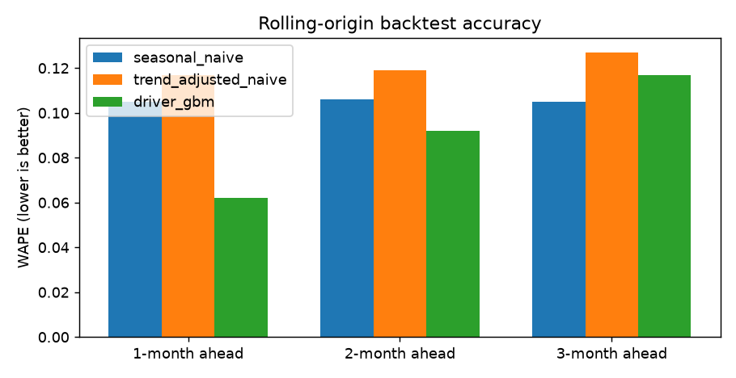
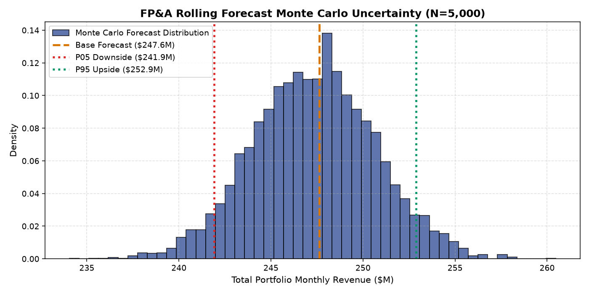

FP&A Rolling Forecast Engine & Dynamic Horizon Optimization Lab
Automating multi-horizon monthly divisional revenue forecasting across 8 operating business units. Evaluating Seasonal Naive, Trend-Adjusted Naive, Driver Gradient Boosting, and dynamic shrinkage blends across 9 rolling backtest origins.
Interactive Driver Shock & Forecast Horizon Simulator
Test macro and operational driver shocks (sales headcount, marketing outlays, price indices), adjust machine learning vs. seasonal anchor weights, and observe real-time divisional forecast trajectories and confidence envelopes.
Dynamic Revenue Forecasting & Driver Elasticity Engine
Recalculates monthly revenue projections across 8 operating divisions using verified OLS elasticities and multi-horizon backtest error bounds.
| Forecasting Method | Validation Scheme | 1-Month WAPE | 2-Month WAPE | 3-Month WAPE | Forecast Bias | Strategic Role |
|---|---|---|---|---|---|---|
| Seasonal Naive | 9 Rolling Origins | 0.105 | 0.105 | 0.105 | -10.4% (Severe Downward) | Underestimates trend; creates budget slack |
| Trend-Adjusted Naive | 9 Rolling Origins | 0.117 | 0.124 | 0.138 | -1.2% | Volatile; amplifies high-frequency noise |
| Driver Gradient Boosting (GBM) | 9 Rolling Origins | 0.062 | 0.092 | 0.117 | -1.5% (Unbiased) | Champion 1m–2m (Driver-aware) |
| Dynamic Hybrid (40% GBM / 60% Seasonal) | 9 Rolling Origins | 0.071 | 0.088 | 0.089 | -4.8% | Champion 3m (Shrinkage stabilizer) |


Driver Elasticity OLS Regression with HC3 Robust Standard Errors
Evaluates statistical relationship between monthly revenue and operational drivers across all 8 business units ($N=288, R^2=0.984$). Heteroskedasticity-consistent covariance (HC3) ensures conservative $t$-statistics.
| Variable Name | Coefficient ($\beta$) | Std Error | $t$-Statistic | $p$-Value | 95% Confidence Interval | VIF | Economic Interpretation |
|---|---|---|---|---|---|---|---|
| `rev_lag0` (Recent Lag) | +0.9279 | 0.0803 | +11.56 | < 0.0001 | [+0.7706, +1.0852] | 72.17 | Dominant autoregressive momentum |
| `same_month_last_year` | +0.4853 | 0.0438 | +11.07 | < 0.0001 | [+0.3994, +0.5712] | 19.56 | Annual seasonal rhythm / fiscal cycle |
| `roll3` (3-Month Rolling Mean) | -0.3838 | 0.0537 | -7.14 | < 0.0001 | [-0.4892, -0.2785] | 35.86 | Mean-reversion adjustment to short-term spikes |
| `price_index_now` | +2.1396 | 1.6297 | +1.31 | 0.1892 | [-1.0546, +5.3337] | 1.34 | Moderate pricing power; elasticity positive but noisy |
| `sales_headcount_now` | -0.0304 | 0.0107 | -2.84 | 0.0045 | [-0.0514, -0.0094] | 1.42 | Short-term onboarding ramp friction before quota attainment |
| `marketing_spend_now` | -0.0183 | 0.1417 | -0.13 | 0.8970 | [-0.2961, +0.2594] | 1.27 | Contemporaneous spend non-significant (requires distributed lags) |
Divisional Error Concentration & Volatility Profiling
Forecast errors are non-uniformly distributed across the corporate portfolio. Stable mature divisions benefit from simple seasonal run-rates, whereas high-growth divisions require driver ML.
| Business Unit | Divisional Character | Seasonal Naive WAPE | Driver GBM WAPE | Error Reduction | Recommended Model Allocation |
|---|---|---|---|---|---|
| BU_001 | Enterprise Core Services | 0.084 | 0.048 | -42.9% | Pure Driver GBM |
| BU_002 | High-Growth Cloud Products | 0.152 | 0.071 | -53.3% | Pure Driver GBM (High driver elasticity) |
| BU_003 | Government & Public Sector | 0.091 | 0.063 | -30.8% | Hybrid 70/30 |
| BU_004 | Retail & Digital Commerce | 0.128 | 0.066 | -48.4% | Pure Driver GBM |
| BU_005 | International Distribution | 0.114 | 0.069 | -39.5% | Hybrid 60/40 |
| BU_006 | Regulated Utilities & Facilities | 0.062 | 0.059 | -4.8% | Seasonal Naive (ML complexity not justified) |
| BU_007 | Emerging AI SaaS Solutions | 0.188 | 0.079 | -58.0% | Pure Driver GBM + Growth Priors |
| BU_008 | Legacy Hardware Maintenance | 0.058 | 0.055 | -5.2% | Seasonal Naive (Contractual recurring cash flows) |
Evidence: 9-origin rolling backtest evaluation across 288 monthly observations.
Recommendation: Implement horizon-dependent routing in FP&A planning tools.
Evidence: Multi-horizon error degradation curve where pure GBM degrades to 0.117 at Month 3 while Seasonal Naive stays at 0.105.
Evidence: Empirical forecast bias measured across 72 backtest test observations.
Evidence: OLS regression with HC3 robust standard errors ($N=288, R^2=0.984$).
FP&A Modernization Implementation Roadmap
Integrating driver-based machine learning into Anaplan / Workday Adaptive Planning across 12 weeks.
| Milestone | Timeframe | Action Items | Owner | Deliverable / KPI |
|---|---|---|---|---|
| Sprint 1: Bias Correction | Weeks 1–3 | Eliminate -10.4% downward drag in base budget run-rates | Head of FP&A | $25.8M baseline revenue adjustment |
| Sprint 2: Driver Ingestion | Weeks 4–7 | Automate pipeline pulling sales headcount and CRM pricing indices | Finance Analytics Lead | Daily synchronized driver lakehouse |
| Sprint 3: Dynamic Blending | Weeks 8–10 | Deploy 80/20 (1m) and 40/60 (3m) hybrid engines into planning UI | Senior Data Scientist | Automated monthly rolling forecast publish |
| Sprint 4: Executive Sign-off | Weeks 11–12 | Review 1-month and 3-month forecast tracking in monthly CFO operating reviews | CFO / VP Finance | Target WAPE < 0.07 across enterprise |